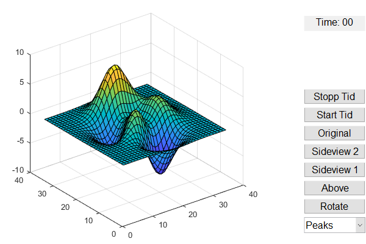

function simple_gui2
f = figure('Position',[50,700,600,400]);
h = [];
h(1) = uicontrol('Style','popupmenu',...
'String',{'Peaks','Membrane','Sinc', 'Fold', 'Hole'},...
'Position',[500,20,100,25],...
'Callback',@popup_menu_Callback);
h(2) = axes('Units','pixels','Position',[50,30,350,350]);
h(3) = uicontrol('String', 'Rotate', ...
'Position', [500, 50, 100, 25],...
'Callback', @button_rotate_Callback);
h(4) = uicontrol('String', 'Above', ...
'Position', [500, 80, 100, 25],...
'Callback', @button_above_Callback);
h(5) = uicontrol('String', 'Sideview 1', ...
'Position', [500, 110, 100, 25],...
'Callback', @button_side1_Callback);
h(6) = uicontrol('String', 'Sideview 2', ...
'Position', [500, 140, 100, 25],...
'Callback', @button_side2_Callback);
h(7) = uicontrol('String', 'Original', ...
'Position', [500, 170, 100, 25], ...
'Callback', @button_original_Callback);
h(8) = uicontrol('Style', 'text',...
'Unit', 'pix', ...
'Position', [500, 350, 100, 25], ...
'String', 'Time: 00');
h(9) = uicontrol('String', 'Start Tid',...
'Position', [500, 200, 100, 25], ...
'Callback', @button_timerStart);
h(10) = uicontrol('String', 'Stopp Tid', ...
'Position', [500, 230, 100, 25],...
'Callback', @button_timerStop);
f.Units = 'normalized';
set(h, 'Units', 'normalized');
set(h, 'FontSize', 12);
peaks_data = peaks(35);
membrane_data = membrane;
[x,y] = meshgrid(-8:.5:8);
r = sqrt(x.^2+y.^2) + eps;
sinc_data = sin(r)./r;
fold_data = x*y.^3 - y*x.^3;
hole_data = -1./(x.^2+y.^2);
current_data = peaks_data;
s = surf(current_data);
function button_rotate_Callback(source, eventdata)
rotate(s, [0 0 1], 5);
end
function button_above_Callback(source, eventdata)
view(2);
end
function button_side1_Callback(source, eventdata)
view(90, 0);
end
function button_side2_Callback(source, eventdata)
view(180, 0);
end
function button_original_Callback(source, eventdata)
view(3);
end
START = 60 - str2double(datestr(now, 'ss'));
tmr = timer('Name', 'Reminder', ...
'Period', 5, ...
'TasksToExecute', inf,...
'ExecutionMode', 'fixedSpacing', ...
'TimerFcn', {@oppdater});
curr_time = 0;
function button_timerStart(source, eventdata)
set (h(8), 'String', 'Time: 00');
start(tmr);
end
function button_timerStop(source, eventdata)
stop(tmr);
delete(tmr);
end
function oppdater(varargin)
curr_time = curr_time + 5;
curr_str = "Time: " + curr_time;
set(h(8), 'String', curr_str);
button_rotate_Callback();
if mod(curr_time, 60) == 0
X = load('gong.mat');
sound(X.y, X.Fs*2.5);
clear X;
end
end
function popup_menu_Callback(source,eventdata)
str = get(source, 'String');
val = get(source,'Value');
switch str{val}
case 'Peaks'
current_data = peaks_data;
case 'Membrane'
current_data = membrane_data;
case 'Sinc'
current_data = sinc_data;
case 'Fold'
current_data = fold_data;
case 'Hole'
current_data = hole_data;
end
surf(current_data);
end
end
